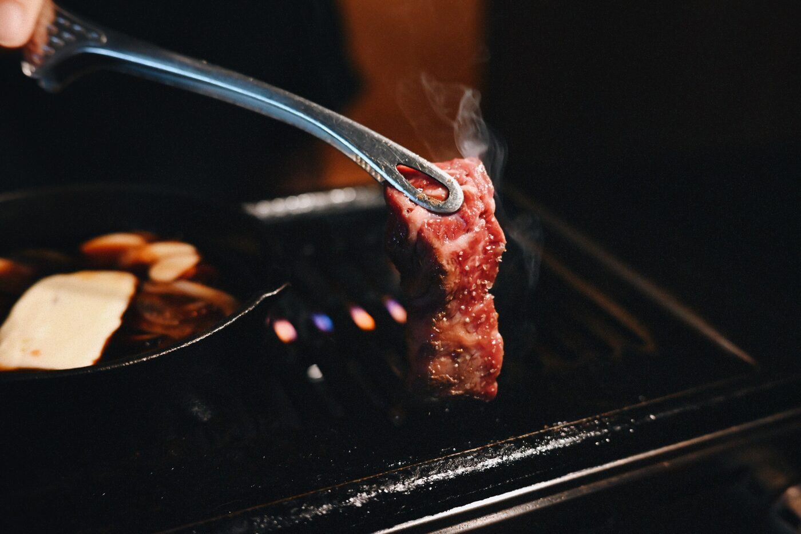
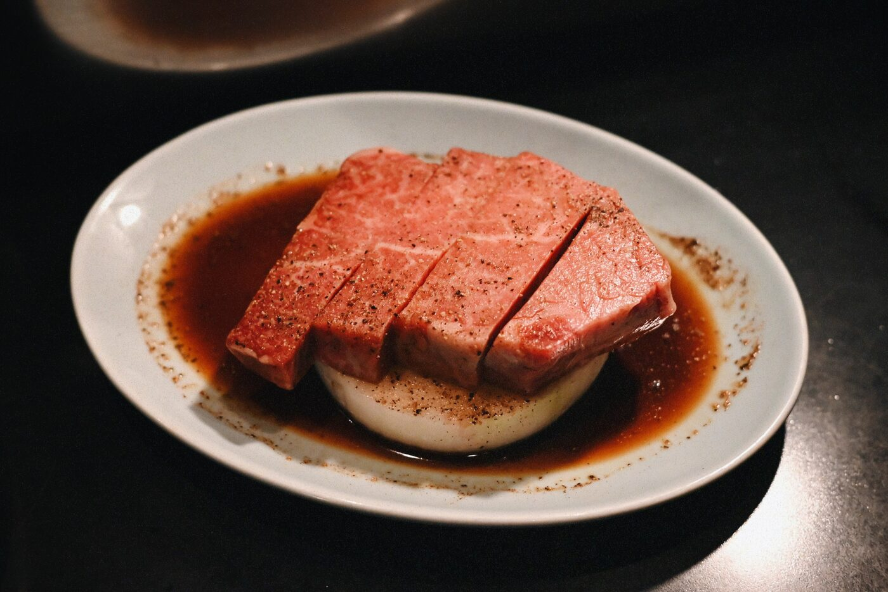
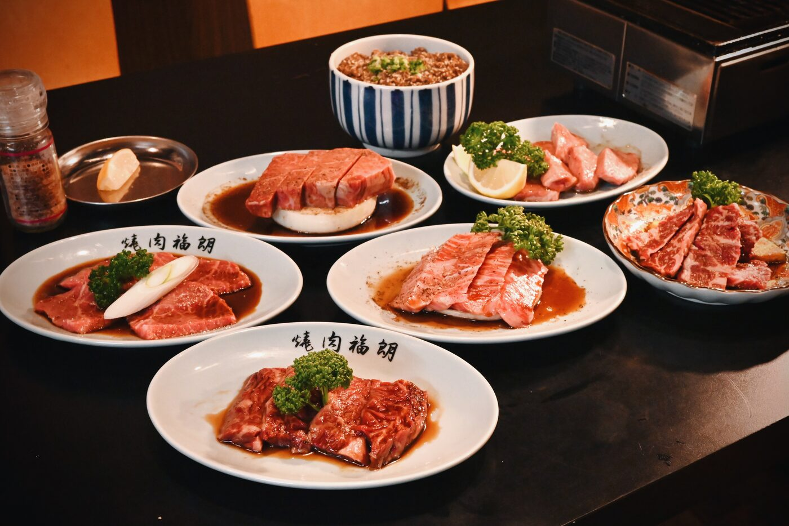
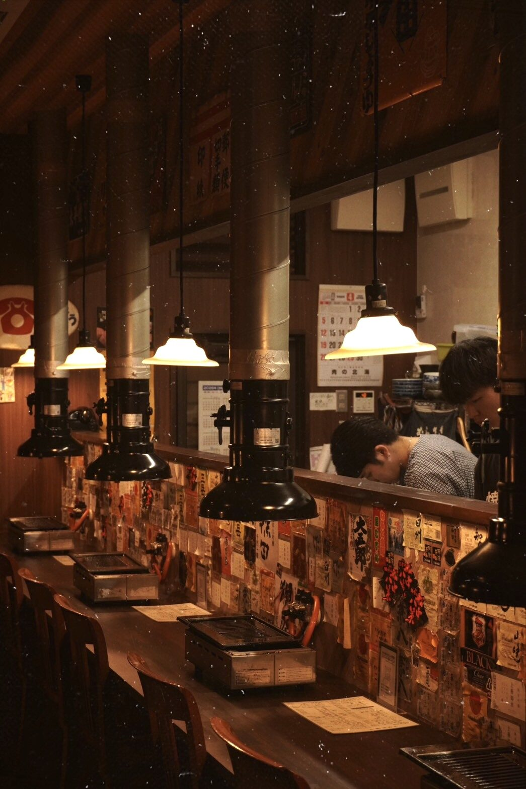
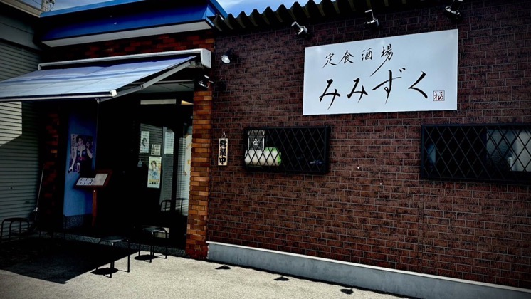

北島本店
- 営業時間
- 17:00〜22:00（L.O. 21:30）
- 定休日
- 月曜日 ※祝日は営業
- 席数
- 22席（カウンター8・テーブル14）
- 駐車場
- あり（共有駐車場50台）
- 支払方法
- 現金、クレジットカード
- @fukurou_yakiniku


焼肉 福朗は、昭和の香りを漂わせる、
新しくも懐かしい焼肉店。
確かな目利きで仕入れる、極上の一枚。
部位ごとの旨みや脂の入り方を見極め、
福朗らしく気取らず楽しめる焼肉として
ご提供します。


きめ細かな霜降りと、
口の中でほどけるような上質な旨み。
高品質な徳島産ブランド和牛を中心に、
優先的な枝肉の選別や独自ルートからの
仕入れを行っています。

どこか懐かしく、心地よい賑わい。
肩ひじ張らずに過ごせる空間で、
上質な肉を囲む贅沢な時間を
お楽しみください。
ご家族やご友人との食事はもちろん、
仕事帰りの一杯にもおすすめです。
日本の食文化に、
焼肉屋から火を灯す。日本には、和食をはじめとする飲食産業という、
世界に誇るべき文化があります。だからこそ、自分の仕事に誇りを持っていますし、
より多くの情熱ある若い世代が
「飲食業で働きたい」と思えるよう、
先頭に立って業界を牽引して
いかなければならないと考えています。その先には、飲食産業の発展が
日本のGDP向上につながり、
ひいては経済成長を支える力になると信じています。
Shops
準備中

Contact
徳島｜焼肉